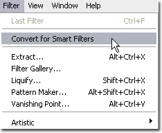

When working within Adobe Photoshop CS3, Silver Efex Pro can be applied as a Smart Filter. Smart Filters enable you to adjust the filter's settings even after the filter interface has been closed. If saving the file as a PSD or layered TIFF, you can even adjust the filter settings after the image and Photoshop have been closed, enabling a non-destructive workflow.
When working as a Smart Filter, the Brush button is disabled, and the filter will be applied to the active layer (even if the After Clicking OK setting is set to the Separate Layer option).
Using Silver Efex Pro as a Smart Filter
To use Silver Efex Pro as a Smart Filter, follow the steps below
1. Select the layer in the Layers Palette to apply Silver Efex Pro to.
2. Click the Filter menu.
3. Select Convert for Smart Filters.
4. Select the Filter menu again.
5. Roll over the Nik Software sub-menu. A popup menu appears.
6. Select Silver Efex Pro.
Note: Silver Efex Pro can only work as a Smart Filter with Adobe Photoshop CS3 as the host.
Note: Perform any rotations or transforms to the image prior to applying Silver Efex Pro as a Smart Filter. Applying a rotation or transform after applying Silver Efex Pro as a Smart Filter can result in a different filter effect.